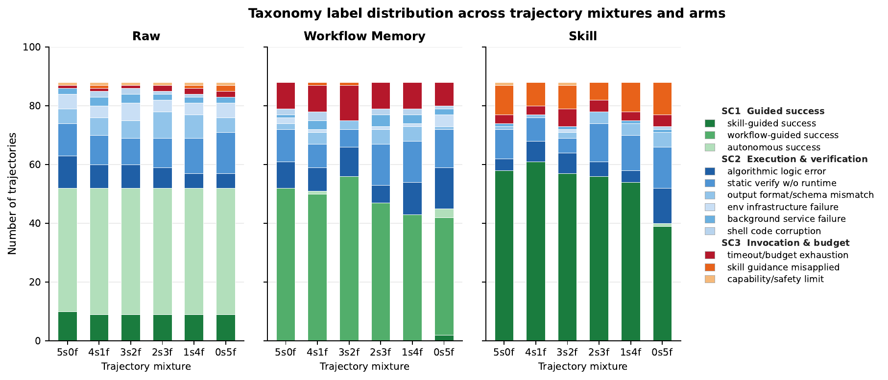
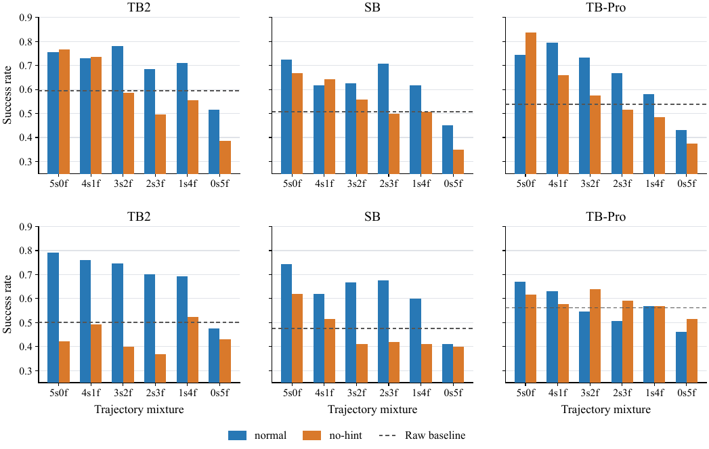
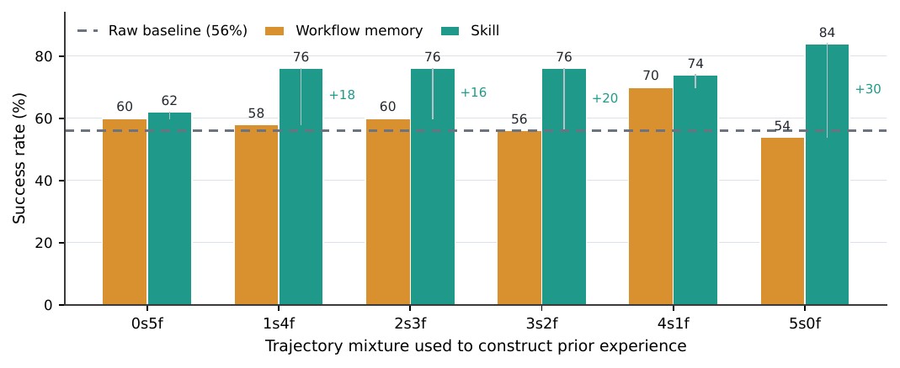

Start with traces
Run agents on the target tasks and keep successful and failed executions as the prior experience.
From procedural memory to structural skills
Aggregate success tells us that a skill helped, but not why, when, or whether the agent used the right one. When do skills help, why do they work, and where do they fail?
Study path
From outcome to explanation.We compare representations, inspect the behavior behind the score, then test whether a skill can be found and used.
01 / Research questions
Aggregate success tells us whether a skill helps, but not which part of the skill-use process is responsible. We therefore study skills as structured procedural experience and separate representation, outcome annotation, framework transfer, and retrieval from downstream execution.
Representation. Holding the task and source experience fixed, does Skill outperform Workflow Memory?
Outcome annotation. Do skill gains come from procedural content or from visible success/failure labels?
Framework transfer. Does guidance distilled by one agent framework remain useful in another?
Retrieval and use. As skill pools grow or become confusable, can agents identify and use the right skill?
02 / Experiment design
We answer these questions by starting from the same agent experience, building comparable procedural representations, and following them through task execution, trajectory analysis, and independent retrieval tests. We then evaluate the representations on the same tasks; retrieval is tested separately rather than treated as one serial pipeline.
Run agents on the target tasks and keep successful and failed executions as the prior experience.
Expose that same experience as raw trajectories, Workflow Memory, or a standardized SKILL.md.
Compare task success, inspect what changed in the trajectories, and independently test skill selection and use.
03 / Findings
Aggregate success is only the starting point. The controlled comparisons and trajectory analysis below identify the conditions and mechanisms behind the result.
Skill reaches 61.9% success versus 55.9% for Workflow Memory, a +6.06-point gain. Because both representations are built from the same source trajectories and evaluated on the same target tasks, this comparison isolates how prior experience is packaged.
procedural_anchor accounts for 65.7% of skill mechanisms, whereas explicit knowledge_injection accounts for only 4.5%. Skills stabilize action: which setup steps to run, which tool sequence to follow, what intermediate checks to perform, and which recurring pitfalls to avoid.
SC2 modes account for 37.3% of raw-arm labels and 33.3% of workflow-arm labels, but only 23.5% of skill-arm labels. Skills reduce environment setup errors, output-format mismatches, service-lifecycle failures, and shell-command corruption, but do not eliminate failures that require deeper problem reformulation or stronger runtime verification.
A skill is not self-executing: the agent must decide whether it applies, which parts to follow, how to adapt it, and when to abandon it. skill_guidance_misapplied_or_ignored appears in 10.0% of skill-arm cases, compared with 0.8% for Raw and 0.4% for Workflow Memory.
Embedding top-1 precision decreases from 88.3% at pool size 5 to 76.9% at pool size 100, while parsed actual-use precision falls from 29.6% to 3.3%. Downstream success remains around 36--39%: selecting the correct skill does not guarantee task success, while related non-ground-truth skills can still provide useful procedural support.
The same trajectory pools are distilled with and without explicit success/failure labels. For Gemini on Terminal-Bench 2 at 3s2f, the normal skill reaches 74.62% versus 40.00% without outcome hints; the same pattern holds across the completed Gemini Terminal-Bench 2 and SkillsBench ratios.
Workflow memories and skills constructed from Codex trajectories are held fixed and evaluated with Gemini CLI. The target tasks and source experience remain unchanged while the prompting style, tool interface, and execution loop change, so downstream differences measure portability rather than regeneration.
04 / Representation results
Choose a benchmark and agent-model pairing to compare three inputs built from the same traces: Raw, Workflow Memory, and Skill. Each row reports downstream task success for one source-trace mixture.
Values are task success percentages. The gray reference line is the matched Raw baseline; each setting contains the same source-trace budget.
05 / Mechanisms

We read paired trajectories to identify what the skill changed, rather than treating success as a black box. The analysis maps 240 open-coded records into 238 valid labels, three categories, and twelve skill-use modes.
06 / Retrieval results
The retrieval study has three independent arms over matched candidate pools. Arm 1 tests semantic ranking, Arm 2 tests explicit selection without task execution, and Arm 3 tests what happens when the full pool is available during the task.
ARM 1 / EMBEDDING RANKING
Task instructions are matched to skill descriptions with Qwen3-Embedding-0.6B. No downstream task is executed.
Arm 1 reports Qwen3-Embedding-0.6B ranking. Arms 2 and 3 average Gemini CLI + Gemini-3.1-Pro-Preview and Codex + GPT-5.4. GPT-5.3-Codex was unavailable for RQ4, so these values are interpreted within RQ4 rather than compared directly with RQ1--RQ3. The arms do not pass outputs to one another.
07 / Additional controlled studies
These analyses complete the representation and retrieval results without changing the central matched-task design.
The same trajectory pool is distilled with or without visible success/failure labels. For Gemini on TB2 at 3s2f, normal reaches 74.62% versus 40.00% without outcome hints.

Open comparison ↗Workflow Memory and Skill artifacts built with Codex are held fixed and evaluated with Gemini CLI, separating portability from regeneration.

Open transfer result ↗On 83 matched tasks, Skill reaches 69.6% success versus 64.8% for Workflow Memory and 64.1% for Raw. Workflow Memory uses fewer total tokens per task: 426.2K versus 521.5K for Skill.